0. 全景图 overview
九个机制按"估计 → 过滤 → 风险博弈"三列串起来，最终产出
GO / CANARY / HOLD / ROLLBACK / ESCALATE 五种决策之一。
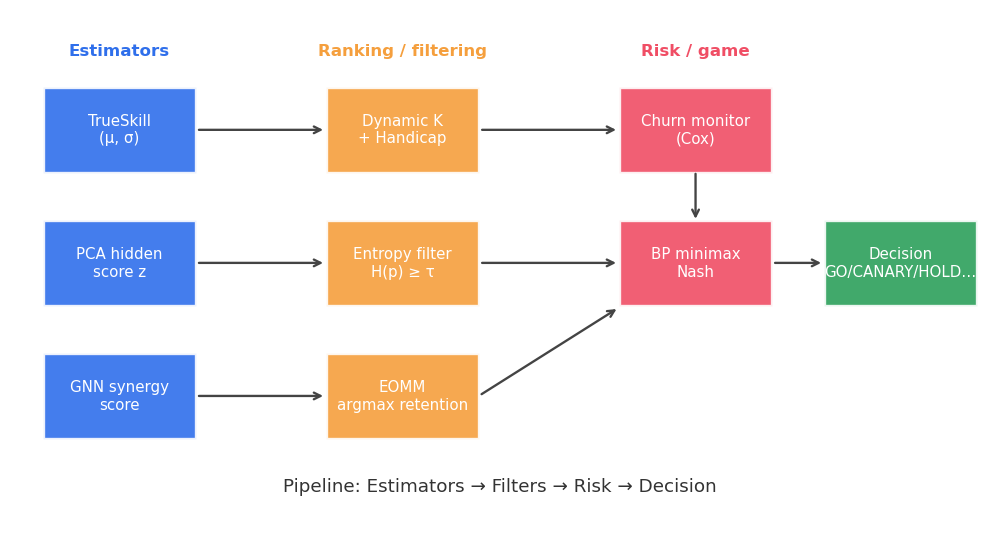
为什么这个架构适合 SRE 自迭代
每个机制都是"公式 + 收益证据 + 回退策略"的三件套：
- 公式给出确定性推理规则，可被 codex 审查。
- 收益图把"不用公式 vs 用公式"的 delta 量化成数字，证明它不是装饰。
- 回退策略（未训练 fallback、shadow 模式、circuit breaker）保证 Day-1 也能跑。
1. TrueSkill 可靠性评级 估计层 · §1
把每个服务的"可靠性"建模为高斯 $s\sim\mathcal{N}(\mu,\sigma^2)$。每次发布用贝叶斯更新让 $\sigma$ 收缩。
公式吃透
观察单次发布结果 $r$，用 Kalman-style 闭式解：
$$ \mu' = \mu + \frac{\sigma^2}{\sigma^2 + \beta^2}(r - \mu), \qquad \sigma'^2 = \sigma^2\!\left(1 - \frac{\sigma^2}{\sigma^2 + \beta^2}\right) + \tau^2 $$$\beta$ 代表"单次发布表现噪声"，$\tau$ 是"每次发布技能可能漂移的量"。 没有 $\tau$ 时 $\sigma^2$ 会收敛到 0，系统永远不更新；加了 $\tau^2$ 保证有下界。
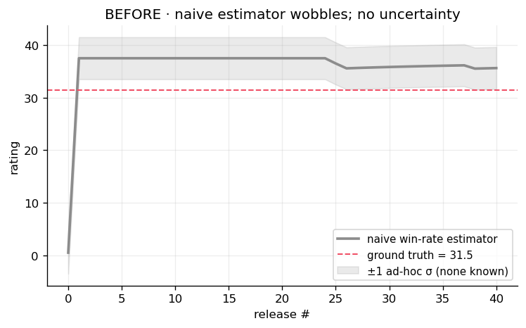
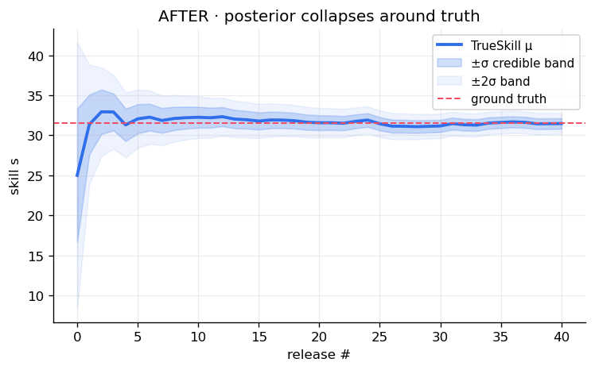
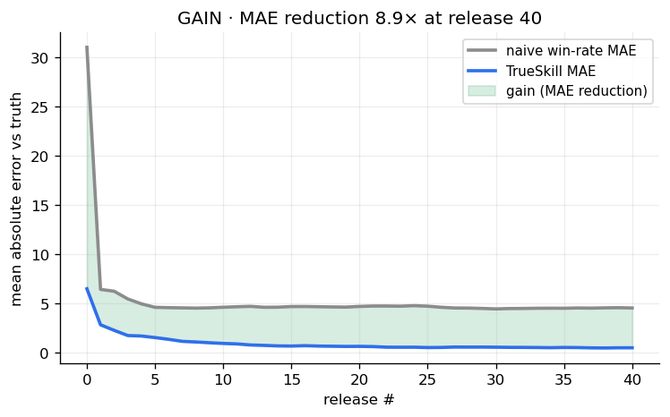
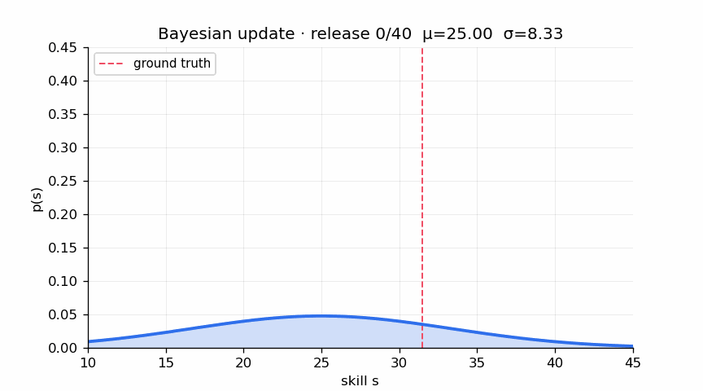
SRE 控制方案
- 观察动作：每次发布成功/失败后调用
pipeline.observe_release(service_id, success)。 - 判定规则：决策时用
confidence = μ − 2σ做保守下界，< 0.5直接降级为 CANARY。 - 新服务：冷启动用 $\mu_0=0.99,\sigma_0=0.02$，见
runbooks/bootstrap-new-service.md。 - 报警：$\sigma$ 在 10 次发布后仍 $> 0.05$ → 触发 SRE 审阅（模型不该"越学越糊")。
gan_matchmaking/trueskill.pyTrueSkillRater.update(team_a, team_b, score_a)tests/test_trueskill.pygan_service_confidence{service_id}4. PCA 遥测降维 估计层 · §4
原始遥测数十维（error_rate、latency p50/p99、throughput、内存、连接池…）， PCA 把它压成一个"稳定分" $z$，和 $\mu$ 融合。
公式吃透
中心化矩阵 $X$ 后做特征分解：
$$ X^{\top} X\, v = \lambda\, v, \qquad z = V_k^{\top} x. $$本项目用 SVD（$X = U\Sigma V^{\top}$）而不是直接求协方差特征值：
- 数值稳定：SVD 对 $X$ 病态鲁棒；协方差法对大条件数会爆。
- 符号任意：$v$ 和 $-v$ 都是合法主成分，所以融合用 $\|z\|$ 而不是 $z$ 本身。
- 可解释性：
explained_variance_ratio_直接显示每一维捕获了多少方差。
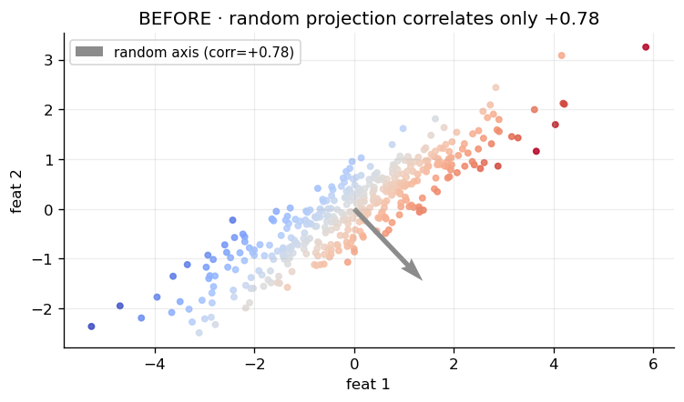
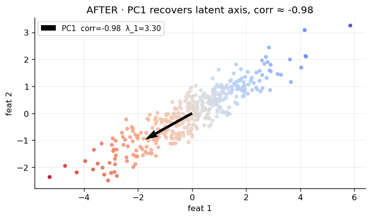
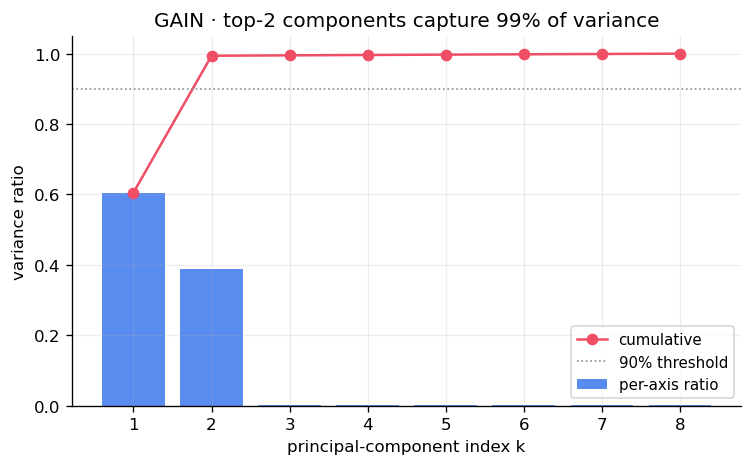
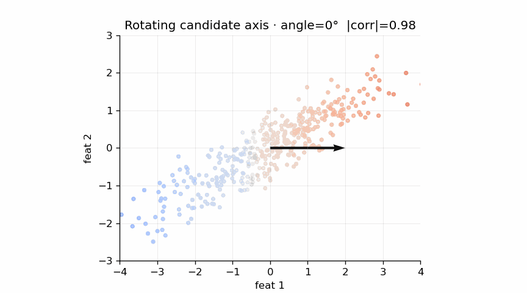
SRE 控制方案
- 数据来源：Prometheus/Loki 拉 30 分钟窗口的多维遥测，装成
telemetrydict 传入ReleaseContext。 - 降维维度：默认
n_components=2。方差解释率 < 80% 时应加维度，见tune-risk-thresholds.md。 - 融合公式：
fused = α·μ + β·‖z‖，$\alpha=1,\beta=0.01$。 $\beta$ 的量级取决于 $z$ 的单位，需要一次校准。 - 检测：$\|z\|$ 超过近 30 天 99 分位 → 可疑异常，直接触发 HOLD。
gan_matchmaking/pca_hidden.pyHiddenScoreExtractor.fit_transform(X)gan_pca_explained_variance_ratio（待上线）5. GNN 依赖协同 估计层 · §5
服务之间的依赖图不是树，是带权图。GNN 把"谁和谁一起上线成功率高"压成节点嵌入。
公式吃透
2 层消息传递，纯 numpy：
$$ h_i^{(l+1)} = \mathrm{ReLU}\!\left( W^{(l)} h_i^{(l)} + \sum_{j \in \mathcal{N}(i)} A_{ij}\, h_j^{(l)} U^{(l)} \right) $$边权 $A_{ij}$ 用 Laplace 平滑胜率：
$$ A_{ij} = \frac{\text{wins}_{ij}+1}{\text{games}_{ij}+2} - 0.5. $$协同分就是最终层嵌入的内积 $s_{ij}=\langle h_i^{(L)}, h_j^{(L)}\rangle$。
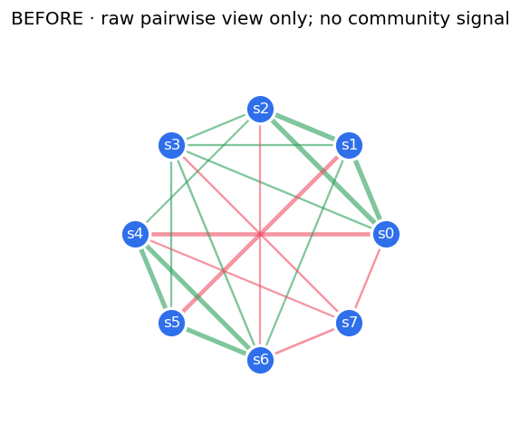
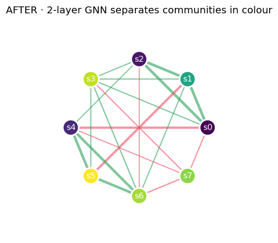
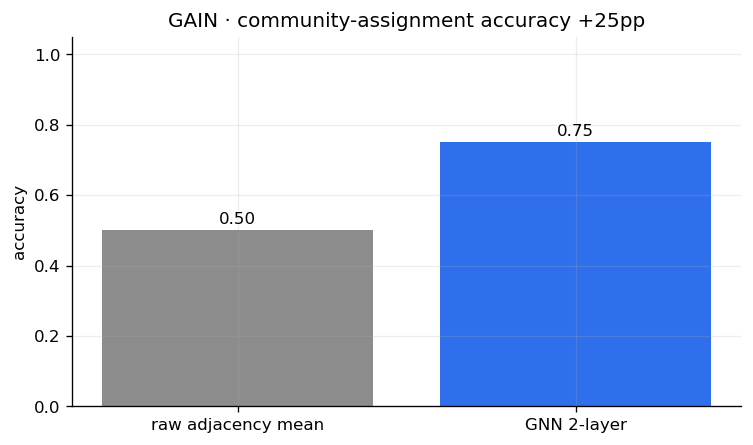
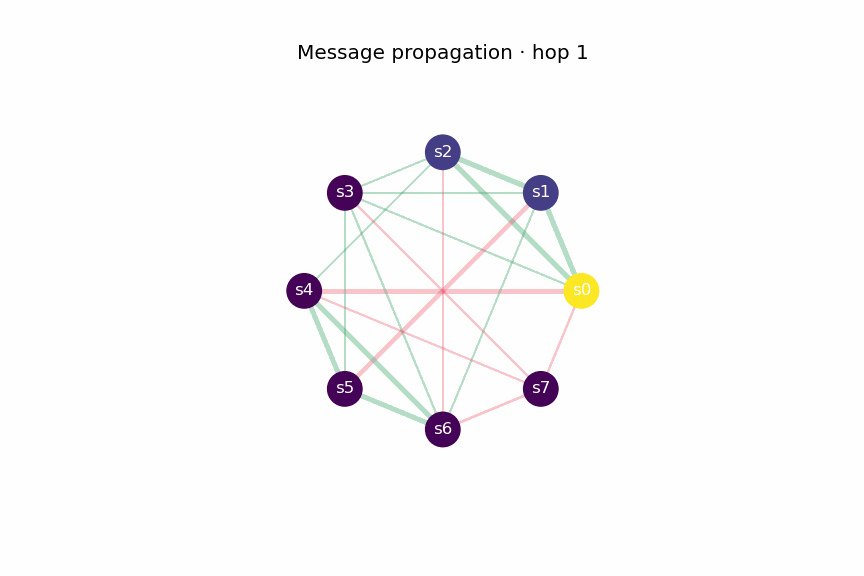
SRE 控制方案
- 图数据来源：每次发布的
depends_on清单写入synergy_edges表。 - 热度衰减：边权用时间窗口（近 90 天）统计，避免历史锅永远卡脖子。
- 负协同：$s_{ij} < 0$ 表示两服务同窗口发布容易双挂，pipeline 会打 CANARY 降级。
- 兜底：冷启动期
min_games未达阈值，GNN 阶段自动跳过，只走其他信号。
gan_matchmaking/gnn_synergy.pySynergyGraph.add_match / SynergyGNN.forwardpersistence/sqlite.py::synergy_edgestests/test_gnn_synergy.py3. 动态 K 因子 排序层 · §3
常数 K 让连续发布的评分像过山车。Logistic 衰减 K 让 μ 平滑。
公式吃透
$$ K(\text{streak}) = K_{\min} + \frac{K_{\max} - K_{\min}}{1 + \exp\!\big(\lambda (\text{streak} - \theta)\big)} $$参数解读：
K_max=32, K_min=4：Elo 约定，保证早期快速学、晚期稳定。θ=5：衰减拐点，5 连胜之后 K 正好到中点。λ=0.7：陡峭度；太大过渡太急，太小基本没衰减。
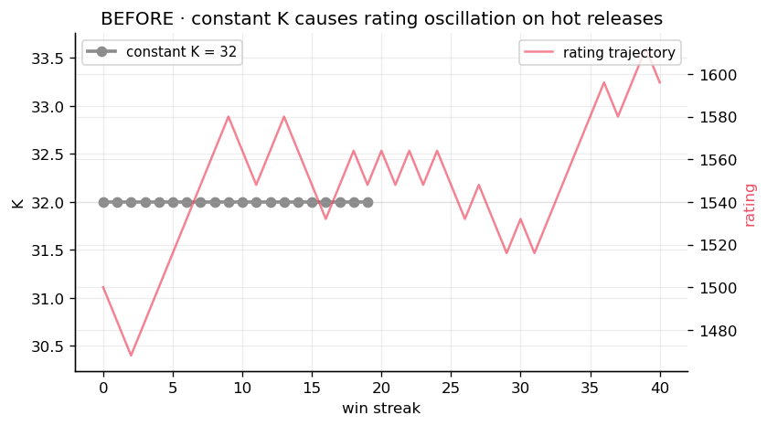
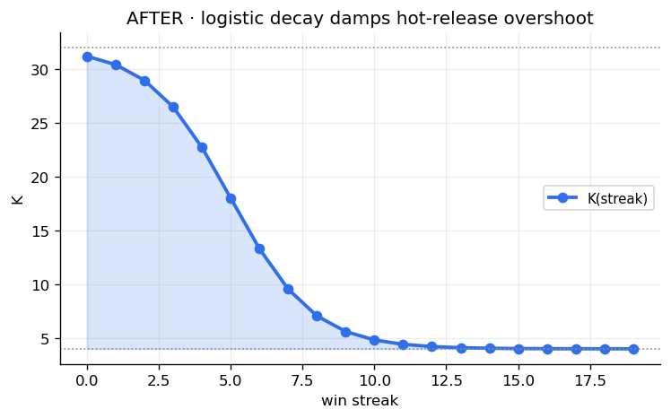
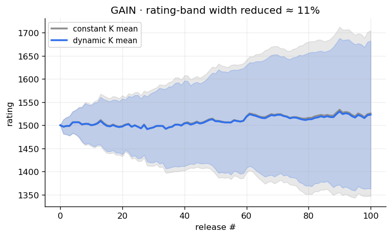
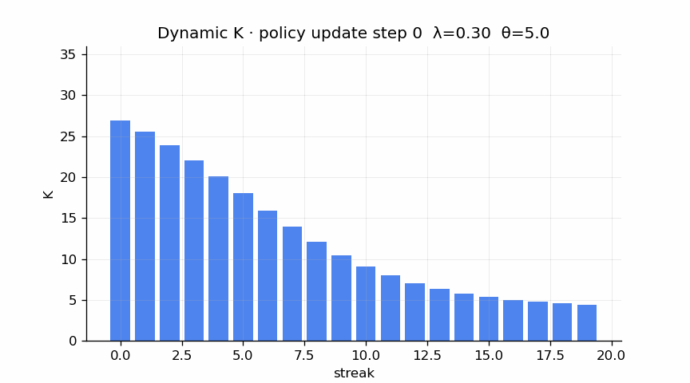
SRE 控制方案
- 触发条件：服务一天内发布 > 3 次（hot-release）时
K=K(streak)全量启用。 - 配置：
config.dynamic_k.theta调发布节奏容忍度。 - 监控：
gan_service_confidence应平滑变化；若方差突增，检查 K 是否没生效。
gan_matchmaking/dynamic_k.pyDynamicK.k(streak) / delta_ratingtests/test_dynamic_k.pygan_service_confidence 平滑性6. Handicap 风险调整 排序层 · §6
把"发布成功的朴素期望"用一个 Penalty 项拉回 50/50。连续成功 → 降低期望胜率，连续失败 → 给软对手。
公式吃透
$$ E_A = \frac{1}{1 + 10^{(R_B - R_A + \text{Penalty}) / 400}} $$Penalty 定义：
$$ P = P_{\max}\!\left(1 - \frac{1}{1 + \text{win}/\tau}\right) - P_{\max}\!\left(1 - \frac{1}{1 + \text{loss}/\tau}\right) $$性质：
- $\text{win}=\text{loss}=0$ → $P=0$，退化为标准 Elo。
- 纯连胜 → $P \to P_{\max}$，相当于系统"高估"对手 $P_{\max}$ 分。
- 纯连败 → $P \to -P_{\max}$，等同于送软对手。
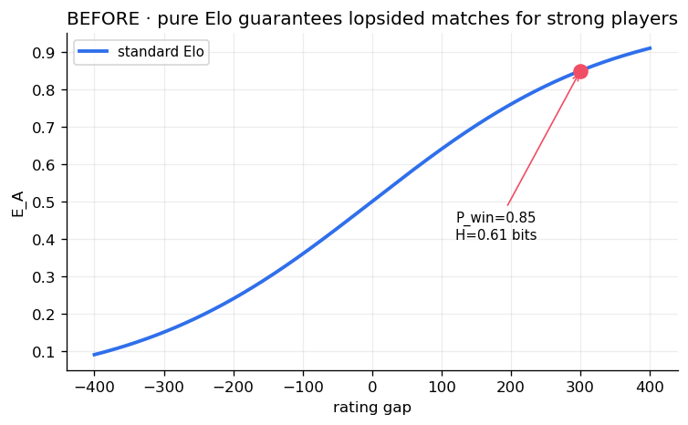
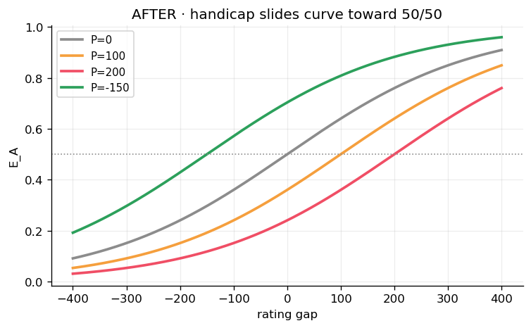
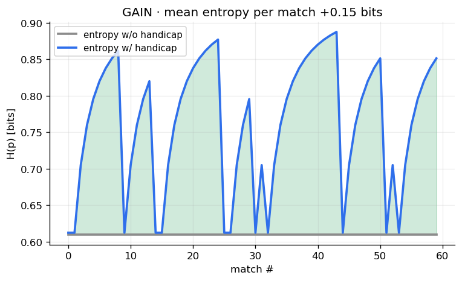
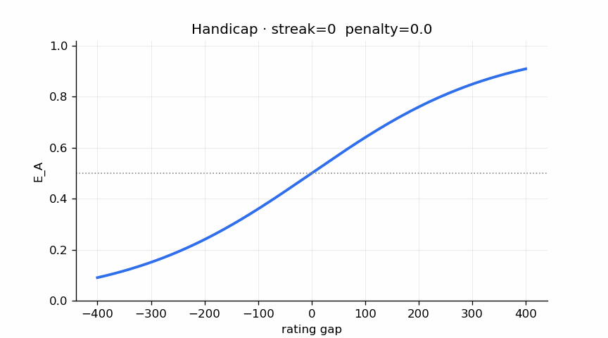
SRE 控制方案
- critical-tier 服务：始终启用 Handicap，连续 3 次成功自动"加惩"进入 CANARY。
- 连败保护：连败 ≥ 2 时给最软的候选 → 和 Cox Survival 的 alarm 分支互斥保护。
- 配置：
max_penalty=200, tau=3。生产建议tau=5，避免早熟。
gan_matchmaking/handicap.pyHandicapElo.expected_win / updatetests/test_handicap.py7. 对局信息熵 排序层 · §7
把 20 个候选金丝雀按熵排序，只留下真能带来信息的那几个。
公式吃透
$$ H(p) = -p \log_2 p - (1 - p)\log_2(1 - p), \quad M^{*} = \arg\max_{M} H\big(p_{\text{win}}(M)\big) $$为什么 $p \approx 0.5$ 最有信息：
- $p=0$ 或 $p=1$ 时 $H=0$，结果已定，金丝雀没学到新东西。
- $p=0.5$ 时 $H=1$ bit，结果完全不可预测，每次观测都是新信息。
- bit 作为单位和 logit / log-likelihood 同量纲，可以直接叠加到 EOMM 的决策打分。
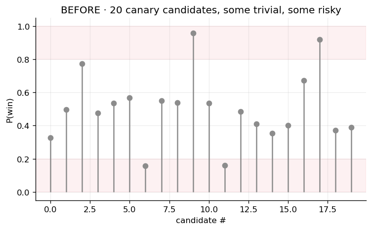
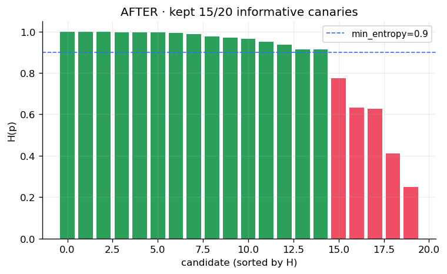
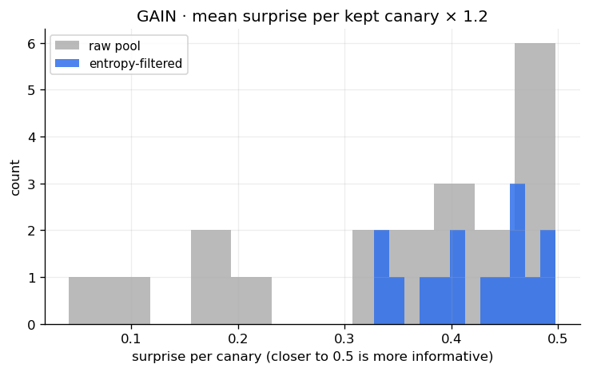
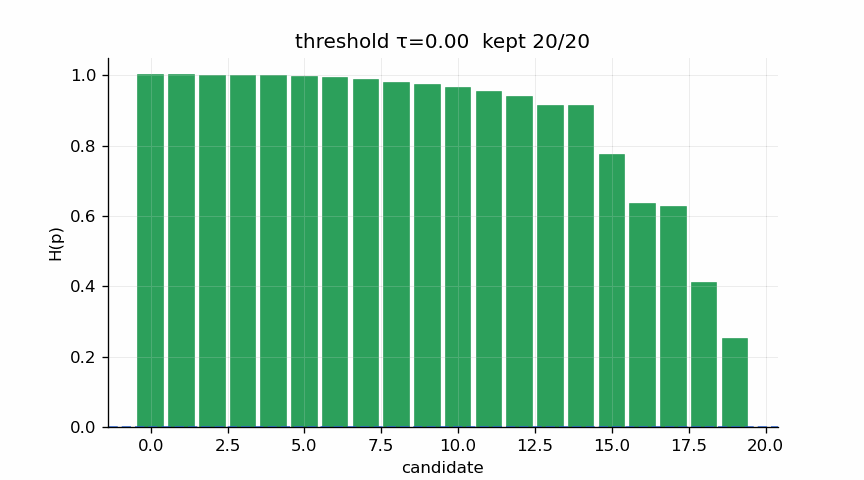
SRE 控制方案
- τ=0.9 是默认值；对发布节奏快的服务应下调（允许略不公平的快速验证）。
- fallback：若所有候选 $H < \tau$，取 argmax $H$ 候选，避免返回空集。
- 可观测性：
trace.stages.entropy.fallback_used=true表示用了兜底，要关注。
gan_matchmaking/entropy_match.pyEntropyMatcher.find_best_match / is_acceptabletests/test_entropy_match.pyconfig.entropy.min_entropy2. EOMM 留存优化 风险层 · §2
把"下一次发布后你是否还愿意再来"建模成 $P(\text{Retain}\mid M, H_t)$ 并对候选集合做 argmax。
公式吃透
$$ M^{*} = \arg\max_{M \in \mathcal{M}} \mathbb{E}\big[ P(\text{Retain} \mid M, H_t) \big] $$$H_t$：服务历史（连胜/连败/平均间隔）；$M$：候选发布配置（canary fraction、回滚预算…）。
工程化：RetentionModel 用 logistic 回归 + 在线梯度下降。冷启动时权重 = 0，回退到规则引擎。
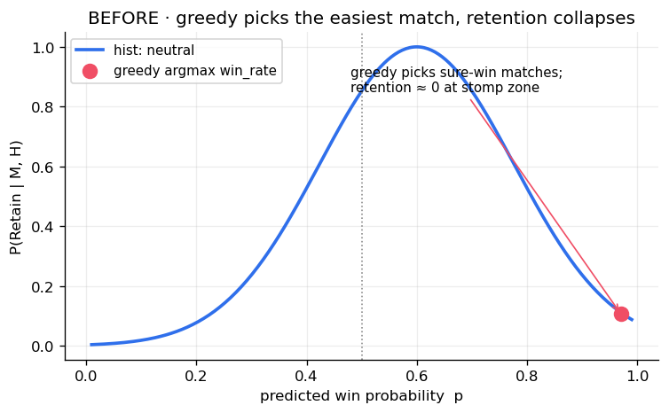
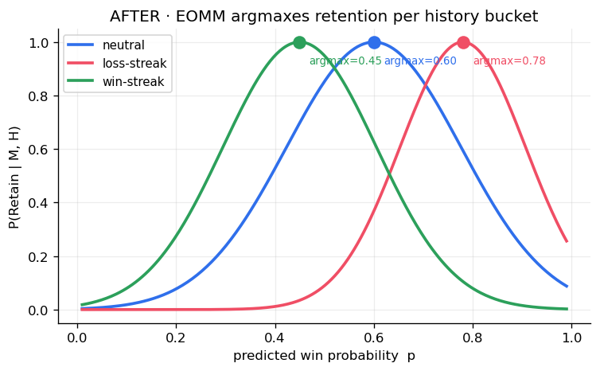
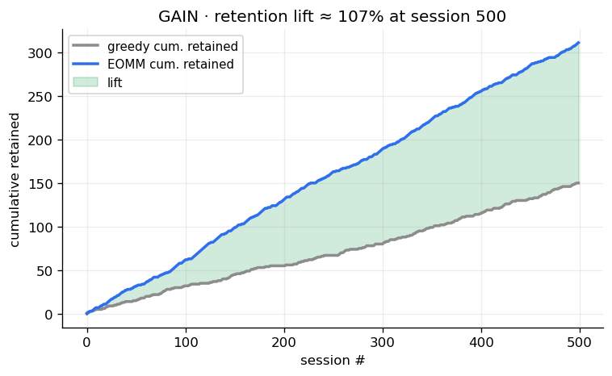
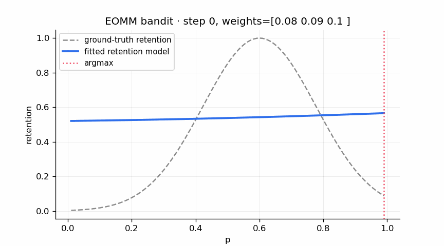
SRE 控制方案
- SRE 版"留存"：下一次发布仍在 SLO 预算内的概率（即 error budget 不被烧穿）。
- 探索 ε：默认 0；线上可设
0.05以小概率尝试非 argmax 配置收集数据。 - 训练：每周基于
observations表重新fit；未训练前保留规则打分。 - 防"喂糖"：EOMM 的目标必须上游被熵过滤器把关，否则会退化成"只送软对手"。
gan_matchmaking/eomm.pyEOMMMatcher.best(history, candidates)tests/test_eomm.pyconfig.eomm.epsilon / lr / iters8. Cox 流失生存分析 风险层 · §8
预测"距离下一次事故还有多少时间"，把连败 / 预算消耗等特征变成一个风险概率。
公式吃透
$$ h(t \mid X) = h_0(t) \exp(\beta^{\top} X), \qquad S(t \mid X) = \exp\!\left(-\int_0^t h(u \mid X)\,du\right) $$$\beta$ 用 Breslow 偏似然最大化：
$$ \ell(\beta) = \sum_{i:\ e_i=1} \Bigg[\beta^{\top} x_i - \log\!\sum_{j \in \mathcal{R}(t_i)} \exp(\beta^{\top} x_j)\Bigg] $$$\mathcal{R}(t_i)$ 是"在 $t_i$ 之前还没发生事故"的风险集。我们实现用 numpy 做梯度上升。
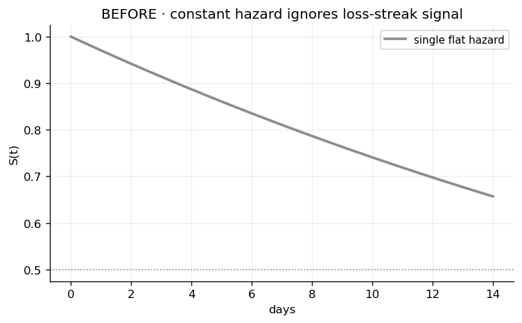
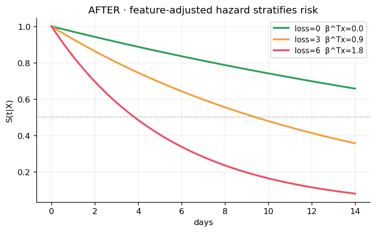
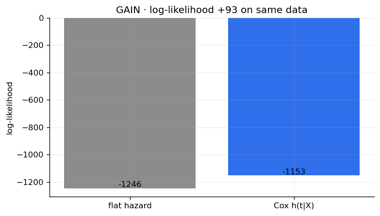
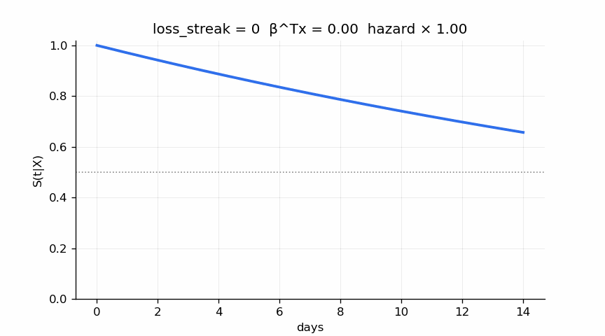
SRE 控制方案
- 门槛：
warn_threshold=0.3, alarm_threshold=0.6。 - ALARM 分支：+ loss_streak ≥ 2 → ROLLBACK；否则 HOLD。
- 特征选择：
[loss_streak, win_streak, 1-μ, σ, canary_fraction, 1-budget]。 - 未训练 fallback：logistic 启发式，偏保守；见
ADR-0005。
gan_matchmaking/survival.pyCoxModel.fit / ChurnRiskMonitor.predicttests/test_survival.pyconfig.survival.*9. Minimax 博弈 博弈层 · §9
当"加新特性"和"保可靠性"利益冲突时，把决策转化为一个零和博弈，求混合策略纳什均衡。
公式吃透
$$ \min_{y \in Y} \max_{x \in X} U(x, y) = \max_{x \in X} \min_{y \in Y} U(x, y) = v. $$用线性规划直接求：
$$ \begin{aligned} \max\ & v \\ \text{s.t.}\ & U^{\top} x \ge v \mathbf{1}, \\ & \mathbf{1}^{\top} x = 1, \ x \ge 0 \end{aligned} $$行玩家（SRE 发布决策者）和列玩家（潜在失败模式）同时解出 $x^{\ast}, y^{\ast}, v$。
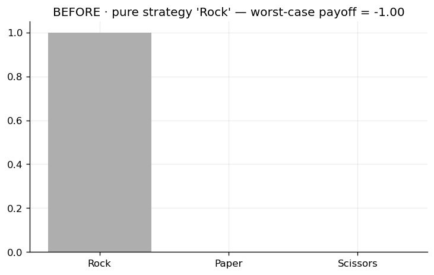
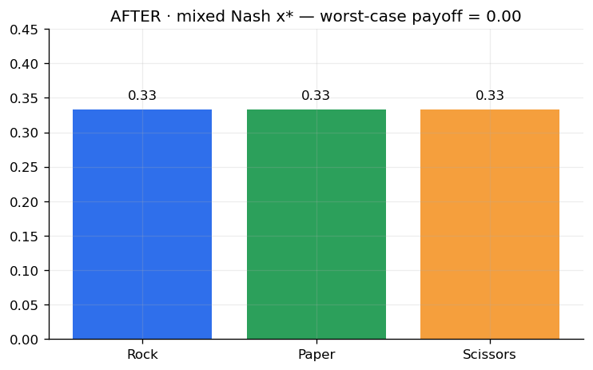
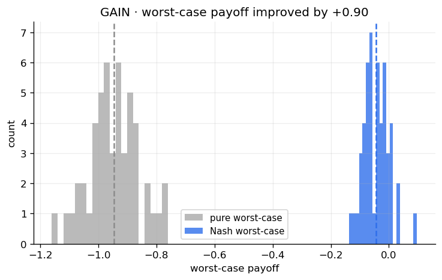
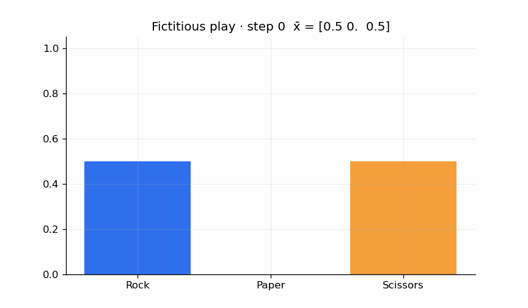
SRE 控制方案
- 应用场景：feature flag 冲突（A 组要上、B 组要稳）、多 region 路由分配、预算划分。
- LP 求解：
scipy.optimize.linprog(method='highs')，万级策略仍 <10ms。 - 证据：价值 $v$ 写入 trace，作为"博弈均衡估计"上报仪表盘。
gan_matchmaking/minimax_bp.pyzero_sum_nash(U)tests/test_minimax_bp.py10. SelfIterationPipeline 装配
七阶段管线把以上九件套串起来，外面包裹 per-service lock / 熔断 / shadow 模式 / 持久化 / 指标。
调用路径
decide(ctx)
├── circuit_breaker.allow? → 否则 ESCALATE (fail fast)
├── per_service_lock(service_id) → 同服务串行
│ ├── _decide_locked(ctx)
│ │ ├── guards: freeze_window / budget_exhausted
│ │ ├── stage.pca ← 遥测降维
│ │ ├── stage.synergy ← GNN 依赖图
│ │ ├── stage.adjusted_probs ← DynamicK + Handicap
│ │ ├── stage.entropy ← 熵过滤
│ │ ├── stage.eomm ← 留存 argmax
│ │ ├── stage.risk ← Cox survival
│ │ └── _resolve_decision → GO/CANARY/HOLD/ROLLBACK/ESCALATE
│ └── breaker.record_success/failure
└── _shadow_wrap(decision) ← shadow / advisory / off
Trace 示例
每次 decide() 返回一个完整可序列化的 trace，包含每阶段的中间状态，便于事后回溯：
{
"kind": "canary",
"risk_level": "warn",
"risk_prob": 0.31,
"confidence": 0.94,
"rationale": ["eomm: picked canary-25pct (score=0.71)",
"risk=WARN → CANARY only"],
"trace": {
"stages": {
"pca": { "fused": 0.95, "hidden_norm": 1e-6 },
"synergy": { "n_dependencies": 1, "score": 0.0 },
"adjusted_probs": { "penalty": 80.0, "probs": [...], "k_factor": 28.9 },
"entropy": { "entropies": [...], "acceptable_idx": [1], "fallback_used": true },
"eomm": { "chosen_id": "canary-25pct", "chosen_score": 0.71 },
"risk": { "features": [...], "prob": 0.31, "level": "warn" }
}
}
}SRE 自迭代闭环
- 观察：每次发布写
observe_release()→ SQLite + metrics。 - 估计：TrueSkill/PCA/GNN 增量更新 $\mu,\sigma,z,h_i$。
- 决策：下次发布前
decide()返回完整 trace + 推荐策略。 - 审计：trace 落地，可通过
runbooks/reproduce-decision.md100% 复现。 - 再训练：每周基于 observations 表重新 fit Cox / RetentionModel。
shadow_mode=shadow，所有非 HOLD 决策都降级为 HOLD 但仍打日志，观察两周。之后切到 advisory，操作员手动 confirm。再过两周切 off，真正 enforce。
附录 · 模块 ↔ 公式 ↔ 代码 ↔ 单测
| # | 机制 | 公式 | 代码 | 单测 | GIF |
|---|---|---|---|---|---|
| 1 | TrueSkill | $\mu'=\mu+\frac{\sigma^2}{\sigma^2+\beta^2}(r-\mu)$ | trueskill.py |
test_trueskill.py |
01 |
| 2 | EOMM | $\max\ \mathbb{E}[P(\text{Retain}\mid M,H_t)]$ | eomm.py |
test_eomm.py |
02 |
| 3 | Dynamic K | $K = K_{\min}+\frac{K_{\max}-K_{\min}}{1+e^{\lambda(s-\theta)}}$ | dynamic_k.py |
test_dynamic_k.py |
03 |
| 4 | PCA | $X^{\top}X v = \lambda v$ | pca_hidden.py |
test_pca_hidden.py |
04 |
| 5 | GNN | $h^{(l+1)}=\mathrm{ReLU}(Wh+\sum A h U)$ | gnn_synergy.py |
test_gnn_synergy.py |
05 |
| 6 | Handicap | $E_A = 1/(1+10^{(\Delta R+P)/400})$ | handicap.py |
test_handicap.py |
06 |
| 7 | Entropy | $H(p)=-p\log_2 p-(1-p)\log_2(1-p)$ | entropy_match.py |
test_entropy_match.py |
07 |
| 8 | Cox Survival | $h(t\mid X)=h_0(t)e^{\beta^{\top}X}$ | survival.py |
test_survival.py |
08 |
| 9 | Minimax | $\min_y\max_x U = \max_x\min_y U$ | minimax_bp.py |
test_minimax_bp.py |
09 |
| 10 | Pipeline | 九件套组合 | sre/self_iteration.py |
test_sre_self_iteration.py |
— |
{kind=link}
{kind=link}
{kind=link}
{kind=link}
{kind=link}
{kind=link}
{kind=link}
{kind=link}
{kind=link}